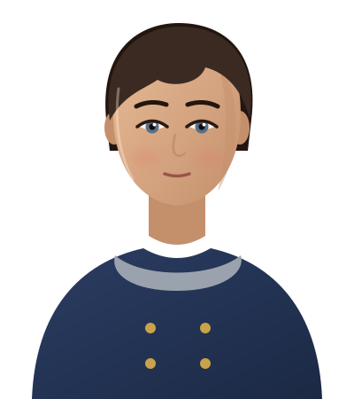

Aren7:08 pm
Tobin, would you fetch us a round from the bar?
 Tobin didn’t like that
Tobin didn’t like that1/1
Design system for a local-first desktop app for AI role-play with characters who remember. Two worlds: the Sky (outside a story) and the Scene (inside one), plus the Backstage lens. Every class here lives in components.css; every value in tokens.css.
Tokens live in tokens.json and tokens.css. The Sky is bright glass over clouds; the Scene is warm lamplight over dark; Backstage is a blueprint.
#c3dafc#14264d#4b5d82#2f63f0#1d44b8rgba(255,255,255,.60)rgba(255,255,255,.82)rgba(255,255,255,.92)rgba(20,38,77,.08)#23b26d#11804b#f0a020#9a6206#c43c5c#ff4f7b#e59a1e#ff5d7e#8a63f0#2f9bd6#7fb0ff → #3d63f2#ff9fb8 → #f0487a#c4a4ff → #7c4ff0#8fe0b0 → #22b26d#ffc98a → #f08a2a#ffd58a → #f0a020#0e0a08#f4e9da#cdbba4#dcc8ad#f0b35a#2a1606#cbb8ff#f4a595rgba(26,19,15,.62)rgba(24,17,13,.84)rgba(255,236,210,.16)#a9dcb8#9cc8ffrgba(16,12,9,.80)rgba(26,19,15,.66)#06203frgba(8,28,54,.86)#8cc3ffrgba(140,195,255,.28)#e4f0ff#9db8d8#ffd08a#a9e0c8#f4a595#ffd08ahero · display 104pxtitle-xl · story 76pxprofile-name · display 46pxpage-title · display 44pxpage-title-sm · display 40pxstory-title · story 34pxh2 · ui 22px / 800h3 · ui 16px / 800story-body · story 19pxbody · ui 15pxbody-sm · ui 14pxlabel · ui 13px / 700caption · ui 12pxeyebrow · ui 11px / 70024×24, 1.8 stroke, round caps. Use icons/sprite.svg (<use href="#i-name">) or icons/icons.json.
homeuserschatmapbellusersettingssearchplusheartlockeyeeyeoffcloudsunmoonvolumemutelayersdotssendstopclocksparkarrowupleftrightdowncheckxkeyserverrefreshpinpushpineditearthoughthandquotebookffquillundostargridfilmhelpshieldcpuglobedragimagefeatherwindswapmergealertlinkfilterflamemap-pincrowndownloadmicEverything outside a story. Frosted glass, pill shapes, candy icons, playful bounce.


 Coin first. Questions after.
Coin first. Questions after.Inside a story. The chat runs the full height; everything else is a widget the user can move, pin, remove or add. Feelings show in the chat; hearing and engine detail stay in Advanced and Backstage.
Tobin, would you fetch us a round from the bar?
Tobin didn’t like thatTobin went to the bar.Quickly, while he’s gone. I hid the guild ledger under the third floorboard behind the bar.
Mira will remember thisMira trusts you a little moreher eyes flick to the bar and back Then stop saying it so loud.
Mira is worried for youTobin is suspicious of youMira is glad to see youMira is worried for youMira has her doubtsMira will remember thisOnly Mira will hear thisTobin is awayTobinThe same scene from behind: everything the engine knows. Mono type, blueprint lines.
~7,300 / 16,384 tokens · 3 memories recalled · cache reuse 81%